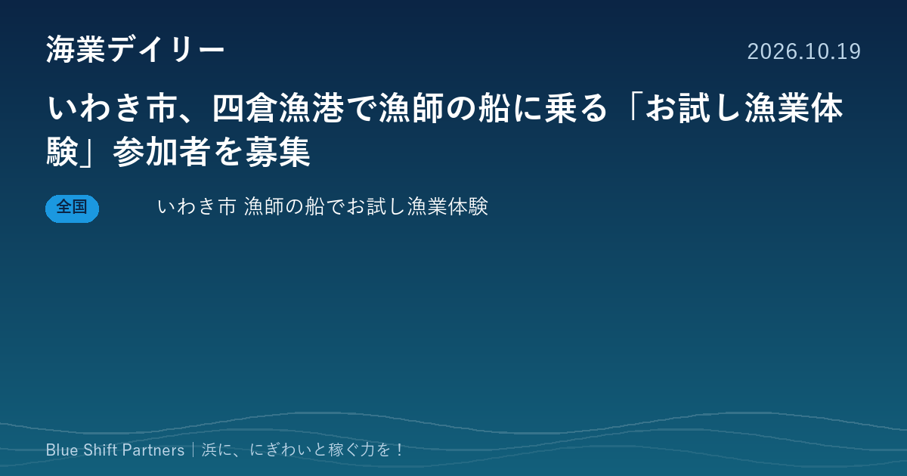

2026.10.19
いわき市、四倉漁港で漁師の船に乗る「お試し漁業体験」参加者を募集

福島県いわき市が、漁師を目指す人向けに、沿岸漁業の漁船に乗る日帰りの漁業体験を11月14日に四倉漁港で行います。参加費は無料で、申込は10月30日までです。本日は担い手確保の取り組み1件をお届けします。
いわき市「お試し漁業体験」11月14日に四倉漁港で開催、10月30日まで参加者を募集
いわき市は「いわき海しごとPROJECT」の一環として、沿岸漁業の漁師の船に乗る日帰りの漁業体験を、令和8年11月14日（土）8時から12時まで四倉漁港で実施します。現役の漁師から話を聞く機会もあります。対象はいわき市で漁師になりたい15歳以上の方で、参加費は無料です。申込は市のページの申込フォームから10月30日（金）までで、集合場所は参加が決まった方にメールで知らされます。
ここがポイント：漁業の担い手確保は、浜のにぎわいと稼ぐ力を続けるための土台です。いきなり就業を決めるのではなく、まず船に乗ってみる入口を自治体が用意する形は、ほかの地域でも取り入れやすい取り組みです。
出典：いわき市 農林水産部 水産振興課「いわき海しごとPROJECT お試し漁業体験」の実施について（2026-10-01）
漁業体験は観光の商品にもなりますが、いわき市のように「仕事を知る入口」として設計すると、担い手確保に直結します。体験に来た人が浜の食堂や直売所、地域の人とつながる導線までつくれれば、関係人口づくりと稼ぐ力の両方に効いてきます。